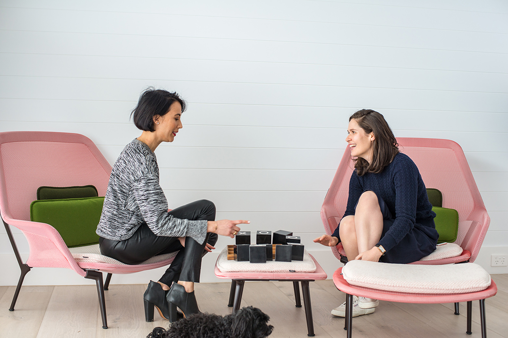

Bowerbirds - The Boweress
Bespoke, Beautiful and Unexpected
8 July, 2017
You have a creative career past; tell us a little bit about it and how it evolved into Nina Maya Interiors
I studied design at COFA, after finishing that I did some work experience in Italy and ended up getting involved in Fashion, which led to me starting my own fashion label, age 21 which I ran for 6 years. It was a great time but after 6 years I felt I needed a change and decided to move to London, having no idea what my next change would be. I began traveling, going to galleries, visiting the south of France and then suddenly it just clicked that interior design used all the skills that I had honed in my past in relation to dealing with fabrics and textures and clients. I was super lucky that my first client was a fan of my fashion and asked me to do her apartment in Potts Point. She was super happy with the result so offered to fly me over to Beijing, where she was located to do her apartment there which was amazing and thus the whole snowball effect began.
Tell about your latest exciting projects
We are sitting in my latest project, Mistelle. A wine bar in Double Bay. My client is a very well versed sommelier so he wanted a fairly serious wine bar in a suburb that didn’t have anything of its kind. The brief was NYC meatpacking district meats Parisian Bistro. We had a lot of fun on this project, as it’s most probably the most themed venue I’ve done to date. There was a lot of scope to be very creative in which we were able to customize a lot of things. I’m also working on a new build in Palm Beach
Tell us about this project…the ideas, inspiration and the core of the overall aesthetic.
The Brief for this project was to create a serene, tranquil retreat from the city with plenty of additional room for indoor and outdoor entertaining during the summer and additional guest rooms for friends and family. I took inspiration from the pared back and minimal aesthetics of Piet Boon and Mies Van Der Rohe.
How does Palm Beach influence your state of mind?
It has a very calming effect on me, The minute I see the water and all the greenery I relax and the frantic pace of he city seems to fade away. My favourite thing is to take long walks and soak in the beautiful views across pittwater Palmie.
What were the Materials used, is there a running theme, palette?
I used a very strict minimal material and colour palette to create a sense of tranquility & calm and contemplation. The dominant material is the beautiful natural European Oak that is featured through out the project and used on all the joinery to maintain a strong sense of cohesiveness and consistency.
Any stand out features…did you go beyond your comfort zone as a designer in this build, what’s been your favourite achievement so far?
This was the first project where I worked designed the interior architecture as well as the decorative finishes to transform an old run down pokey 1980s beach bungalow into a contemporary residence with wide open spaces and a sense of fluidity.
Have you collaborated with trades/ designers to get certain aspects of the home completed?
I collaborated with European Timber floorings to make my own custom stain for the european oak flooring, as well as our Joiner AV joinery on bespoke custom joinery throughout. We also created some one off pieces of free standing furniture including a Marble topped hall console and curved solid oak Concealed TV console where the TV rises up from beneath the floor level at the touch of a button.
The sheer size of this project is overwhelming, how have you balanced your down time in relation to the time effort and energy gone into producing this house so far?
It had been the largest project both in scope and scale that we have completed to date, The great things about having site meetings on a friday is that we usually spent the weekends up there which gave me a chance to wind down.
Favourite feature of the home:
The bespoke wine cabinet that showcases the incredible natural sandstone rock that the house sits on.
What has surprised you most about this project, professionally or personally?
It has been the first project that I have completed that I have had the opportunity to then stay in and experience for myself which has been incredibly rewarding and a dream come true. It has also been wonderful to bring clients through to show them in person some of the concepts and materials that we have been trialling and to get their feedback too. Whilst we planned all the major elements of the design & build there were plenty of opportunity to refine all the details as the demolition and build revealed more and more opportunities.
Top 3 design influences that affect your work?
Travel, Instagram and magazines.
First thing you do in the morning?
I check Instagram (laughs)
Last thing you do before bed?
Check Instagram! (laughs) I know…it’s so bad…no I kiss my boyfriend goodnight…;)
Are you on the snap chat wagon?
No…no … no …not my thing.
Country or City?
Um…City…if the beach was an option I would have said beach.
Surf or Snow?
Surf
Last Item your Bought for your Apartment?
I think it was a vase from Anibou.
What’s the best way to add value to your house or apartment?
I always say flooring because it’s the single biggest item apart from the walls.ie…paint that wil totally transform an old house into a new home.
How do you create light in a dark space? And space where there is no room?
Mirrors would be a perfect example. The back area of Mistelle had no light so we put 2 mirrors facing each other to try and amplify a sense of light.
What some ways you take time out from your busy schedule? What environment do you need to find your Zen?
Paddle boarding, yoga and meditation. Also walking everyday.
We are lucky enough to be checking out one of your latest projects – could this be a public Bowery?
Mistelle is situated on a very busy thoroughfare. The whole point is that we wanted to create a very warm, welcoming environment. When you walk through these doors you are taken into a different mind space whether you’re in the private dining area or nestled into the booth there is definitely a sense of comfort evoking the feeling that you could sit and enjoy yourself all night. I also use neutrals in my environments to create that sense of calm, blue being an integral colour here.
Can you use similar design frameworks for both commercial and residential, or are they completely different?
Yeah I think so. We respond to every brief, to the specifics of the brief but my general ethos is to create a calming space so that’s always achieved through complimentary tones and neutrals and then layering that with textures.
Favourite Complimentary Materials?
Glass, marble, timber, stone.
Someone or something you would like to work with in the future?
A landscaper, William Dangar whose work I admire very much. Also Dylan Farrell who is a wonderful architect.
Photography by Mark Sherborne at ‘MJS Pictures’ at Mistelle, Double Bay and Palm Beach. Nina Maya
